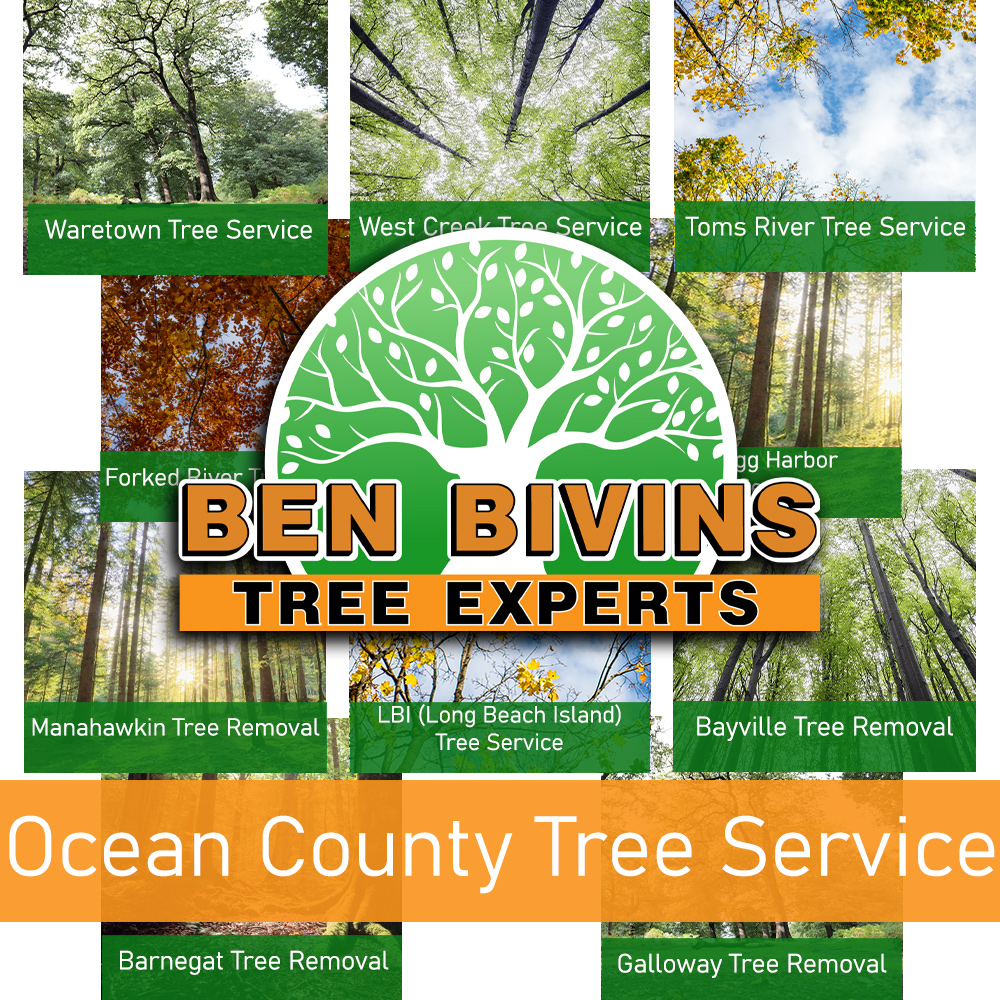

If you need any variety of tree service in Ocean County or tree removal in Ocean County, Ben Bivins Tree Experts can handle it. Our New Jersey business has been supplying expert tree services to all the towns in Ocean County for years.

Trust the Experts for Tree Service in Ocean County
Do you have a dead or dangerous tree that needs to be removed? Tree removal is usually a high risk job that requires precise safety practices & the correct use of proper equipment. We highly discourage homeowners from attempting tree removal on their own. It can put yourself and others in danger, without the proper training and tools.
There could be numerous reasons why you need tree removal in Ocean County:
- Tree is blocking the entrance to your home
- Tree is damaged or dying presenting a potential safety hazard
- Tree has overgrown limbs that could inflict serious injury
- Tree was damaged during a weather event and is no longer able to be saved
- You are planning on renovations that require the removal of the tree to proceed
- Tree appears sick and is losing a greater than average amount of leaves during the growing season
Ben Bivins Tree Experts is fully insured and licensed tree company. Don’t take the associated risk of hiring an uninsured tree removal company or depending on a friend of a friend to perform any type tree service for you. Our staff is professionally qualified and our business carries the appropriate credentials to make sure your Ocean County tree removal will be performed in the safest and most efficient possible way. Tree removal necessitates the use of serious machinery and hazardous equipment which should only be left to the pros.
Leave it to the experts! Call us today for an estimate on your Ocean County tree removal.
Tree Service in Ocean County NJ – What We Do
We perform all aspects of Ocean County tree service including, but not limited to:
- Tree Trimming – Do you have overgrown trees in your yard? Is a neglected, mature tree causing too much shade for your lawn? Trimming a tree’s limbs can make a big difference. In many cases, trimming a tree can change your mind about removing the tree and make you want to keep it.
- Pruning – Keeps the trees happy and healthy. Pruning involves assessing a tree’s health and deciding to remove limbs selectively to boost its health and longevity. This process is less invasive than trimming and is done on a more regular basis.
- Crown Reduction – We are able to reduce the size of your tree’s canopy using this method. Our team will assess your tree and make suggestions to remove particular branches which will cut back canopy cover. We are always careful about removing the appropriate amount of branches so as not to harm the tree.
- Emergency Tree Service – Have you got a downed tree that requires urgent attention? Is there a tree that is close to causing destruction if quick service is not available? Give us a call. We are happy to help in an emergency and provide you with timely service.
If you’re a Ocean County homeowner in need of tree service, call us today. Appointment time varies according to weather, season and our current jobs in progress. Our representative will give you a quote and let you know dates available for service after assessing your particular job.
Your Experts for Ocean County Tree Service
We are happy to provide service for all of Ocean County. A few of the towns we visit regularly are: